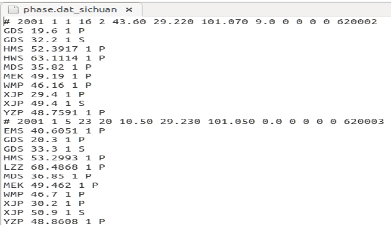
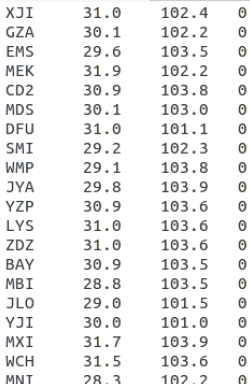
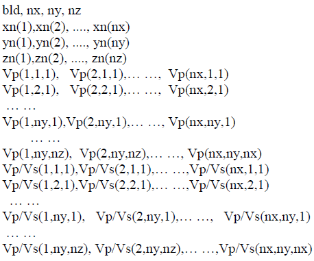
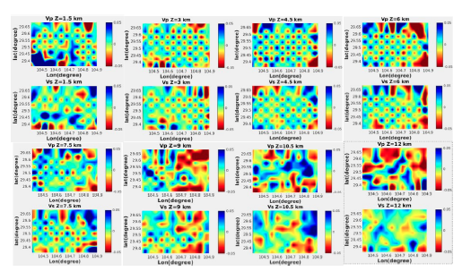

Body Wave Tomography
The significance of velocity model in seismology
Velocity is the essential physical property of underground objects. It can be used to detect the presence (location and size) of different geological objects underground and can be used to search for oil and metal deposits. Furthermore, velocity models can be used to investigate the evolution of the earth, as well as the location and origin of earthquakes. Body waves and surface waves are two types of seismic waves. For velocity inversion, we can use body waves (P- and S-waves), surface waves, or joint body waves and surface waves. There are many velocity inversion methods, such as one-dimensional model inversion, tomographic velocity inversion, and full waveform inversion. These methods have different computational efficiency and accuracy. The research method to use is determined by the accuracy requirements of the research objectives, the quality of seismic data, and the economic cost. Here we introduce a seismic traveltime tomographic inversion method. It uses first arrivals of body waves and plays an important role in detecting the internal structure of the solid earth.
Brief introduction of the tomography inversion method-TomoDD
TomoDD is a local-scale (<100 km) seismic tomography software based on ray travel time. It is a gird-based 3-D velocity inversion method that uses absolute and relative arrival times to invert both the velocity structure and the event location. The relative arrival time is the differential arrival time of the event pair. Relative arrival times can reduce systematic errors and thus generate more accurate velocity models than standard tomography methods that only use absolute arrival times. TomoDD is an optimization inversion method in which the LSQR algorithm (Paige et al., 1982) is used to minimize the residual between forward data and observed data, so as to obtain the final velocity model. The forward travel time calculation is computed by the pseudo-bending ray tracing algorithm (Koketsu and Sekine, 1998).
Note
TomoDD codes and tutorials. TomoDD is modified from hypoDD (Waldhauser 2001), so it is recommended to learn hypoDD before you learn TomoDD.An introduction to the use of TomoDD software
The use of TomoDD software mainly consists of three steps: 1) Preparation of input data; 2) Modify parameter files and perform field data inversion; 3) Resolution test of inversion results. Here we give a practical data processing example to illustrate the use of the TomoDD software. Download the TomoDD example package here. After unzipping, we can see that the package contains four folders. The Doc folder stores the input/output parameters and file format description files of TomoDD, as well as two pieces of literatures related to TomoDD. The folder Example shows an actual velocity inversion case. The Script folder shows some MATLAB drawing scripts, and the text file named illustration shows how to use them. The folder Src contains TomoDD’s source code as well as the code for calculating differential arrival times. The platform and software needed to run the program: ubuntu, gfortran, matlab.
1 preparation of input data
1.1 Prepare the seismic phase file (phase.dat) and station file (station.dat)
1.1.1 Seismic phase file: the format of this file is shown below (as shown in Example/ph2dt)

{kind=link}
Figure 1. The format of the seismic phase file. Lines that begin with # represent event information, while lines that do not begin with # represent the station that received the event.
The meaning of the event and the station line is:
# Year Month day hour minute second latitude longitude depth (km) EH EV RMS Event ID
Station name travel time data quality seismic phase
……
Note
1.1.2 Seismic phase file: the format of this file is shown below (as shown in Example/ph2dt)

{kind=link}
Figure 2. The format of the seismic phase file
The meaning of each line is:
Station name Latitude longitude elevation (m)
……
1.2 Calculating absolute arrival times (absolute.dat), differential arrival times of event pair (dt.ct) and event information (event.dat).
1.2.1 Compile program (input: ph2dt.inc; output: ph2dtN3)
a. Change the path toSrc/ph2dt/includeand change the three parameters inph2dt.inc: MEV, MSTA, MOBS.b. Change the path toSrc/ph2dtand use the following two command:make clean;make. Then we can obtain the executable file namedph2dtN3.make cleanmeans deleting the files generated by the previous compilation,makemeans compiling the code and generating executable files.
Note
1.2.2 Execute the generated compiler to calculate differential times (input: ph2dt.inp; output: absolute.dat, dt.ct, event.dat)
Copy the executable file ph2dtN3 to the folder Example/ph2dt and edit the parameter file ph2dt.inp in that folder. Then, enter ./ph2dtN3 ph2dt.inp in the command line, and click enter to complete.
1.2.3 Convert the resulting event.dat file to the data format required by TomoDD, as shown below
awk -f addEve0.awk event.dat > event.dat
At this point, we have all the data we need for TomoDD software, which are absolute.dat, dt.ct, event.dat, station.dat.
2 Inversion example
2.1 Preparation of the initial velocity model
1 The initial velocity model may be given a transversely homogeneous gradient model increasing by depth.
2 In addition, the initial velocity model can also be obtained by using the VELEST (Kissling et al., 1994) program.
The format of the initial velocity model is as follows
{kind=link}
Figure 3. The format of the initial velocity model. bld is 1 or 0.1 or 0.01, which depends on the minimum precision of the grid points in the x, y, and z directions. nx, ny, and nz are the number of grid nodes in x, y and z directions. xn(1), xn(nx), yn(1), yn(ny), zn(1) and zn(nz) are boundary nodes that must be large enough to hold all the events and stations.
2.2 TomoDD source code compilation: tomoDD-SE
2.2.1 Allocate the memory required by the program by modifying the following parameter file
a. Under the folderSrc/tomoDD-SE/include, modify the following parameters ofRaySPDR.inc:maxnx—maximum number of nodes in x direction
maxny— maximum number of nodes in y direction
maxnz— maximum number of nodes in z direction
mxpari— maximum number of parameters to invert for.
maxpar— maximum number of potential parameters that could be included in the inversion. For
tomoDD, mxpari is equal to maxpar. Both of them should be at least equal to iuses*(maxnz-2)*(maxny-2)*(maxnz-2).b. Under the folderSrc/tomoDD-SE/include, modify the following parameters oftomoFDD.inc:MAXEVE: maximum number of events used in the inversion.
MAXSTA: maximum number of stations used in the inversion.
MAXDATA: maximum number of phase data including both absolute and differential data.
MAXNODE: maximum number of inversion nodes for each ray to sample (~4*MAXNZ).
MAXND: it is used to control the maximum number of nonzero slowness partial derivatives (MAXND*MAXDATA) (<4*MAXNZ).
2.2.2 Compile program
In the folder Src/tomoDD-SE, run make clean and make in sequence to obtain the executable file tomoDD-SE for inversion.
Note
Makefile.32 & Makefile.32_syn; Terminal operation: make clean -f Makefile.32; make -f Makefile.32 and make clean -f Makefile.32_syn; make -f Makefile.32_synMakefile & Makefile_syn; Terminal operation: make clean; make and make clean -f Makefile_syn; make -f Makefile_synMakefile.32_syn and Makefile_syn are used to generate the forward simulation executable, Makefile.32 and Makefile are used to generate velocity inversion executables.gfortran 4.7 or lower, updating the compiler name in the Makefile (line 5) to the newly downloaded version, and then recompiling.2.3 Preparation of parameter file: tomoDD-SE.inp
This file is shown in Example/RealData-Inversion. Change the inversion parameters in the file according to the filed data, and the meaning of the parameters is clearly explained in the parameter file.
For parameter adjusting, we need to emphasize the following points:
The absolute data is given a large weight (WTDD) to invert the overall velocity structure; In order to better constrain the source region structure, more weight (WTCTP, WTCTS) is given to the differential arrival times data.
Since the convergence of velocity in joint inversion is faster than that of seismic location, it is suggested to add a location-only inversion (JOINT = 0) after each joint inversion.
How to select WRCT, WRCC, WDCT and WDCC in each group of iteration parameters?
WRCT, WRCC: The program will weight each data according to its residual. That is, the larger the residual of a data, the smaller its weight, or even 0. WDCT, WDCC: The program will weight the data according to the distance between earthquakes. That is, the greater the distance between earthquakes, the smaller the weight will be. After the distance exceeds the distance, the weight will be 0. None of these parameters can be used (set to -9). Especially for the joint inversion of velocity and position, WDCT and WDCC may not be used. It is generally recommended to use WDCT and WDCC unless the data is ideal and the values are gradually reduced. If the data quality is very high, you are advised to set WDCT and WDCC to about 3.
The regularization parameters smooth and damp are selected using the L-curve method. For the L-curve method, please refer to Sections 5.1 and 5.2 of Parameter Estimation and Inverse Problems (Richard C. Aster et al. 2005). In
Example/RealData-Inversion-Lcurve, the procedure for choosing smooth using L-Curve is shown. The selection process for damp is the same as for smooth.
2.4 Prepare the folder for input data: Input_Files
As shown in Example\RealData-Inversion\Input_Files, place the prepared files (absolute.dat, dt.ct, event.dat, station.dat) into it.
2.5 Prepare the folder for output data: Output_Files
The velocity model and source location information generated by inversion procedure are placed in folder Example\RealData-Inversion\Output_Files. In Output_Files, matlab programs in this folder can be used to draw the earthquake location and velocity model in three directions of the slice map.
2.6 Perform inversion
After the above five steps are completed, copy the executable files to the folder Example/RealData-Inversion and execute ./tomoDD SE tomoDD SE.inp in the terminal to carry out velocity inversion. Note that ak135.15.SKS, layer-16.dat are files that are prepared for the TomoDD executable file. We don’t need to change it.
2.7 Display of inversion results
The figure below shows the velocity model of inversion, which is drawn by the matlab script under the folder Example\RealData-Inversion\Output_Files.
{kind=link}
Figure 4. Inversion results
2.8 Data residuals
The initial residual file is tomoDD-SE.res.ini, as shown below. Its default output is in the directory where the program is run.
{kind=link}
Figure 5. The initial residual file. IDX represents data type (1 denotes P-wave cross-correlation data; 2 denotes S-wave cross-correlation data; 3 denotes P-wave directory data; 4 denotes S-wave directory data), RES represents residual (ms).
tomoDD.res represents the travel time residual of the data after final inversion. It can be found in the folder of Example/RealData-Inversion/Output_Files and is in the same format as the tomoDD-SE.res.ini. We can make use of the above two data files to plot the changes in residual errors of travel time before and after inversion. See, for example, the following figure:

Figure 6. Residual misfit improvement.
Note
Doc/tomoDD_manual and can be queried if necessary3 Resolution test of inversion results
We need to know the reliability of the obtained velocity model, as well as its horizontal and vertical resolution, in order to conduct further research on seismogenesis interpretation. We can use the ray distribution density diagram and the checkerboard test to study the resolution of the velocity model.
3.1 Ray distribution density
The script extract_dws.awk in the folder Example\RealData-Inversion\Output_Files can be used to extract the ray density (DWS_P, DWS_S) of each grid point from tomoDD.vel. By doing awk -f extract_DWS.awk tomoDD.vel at the terminal, we can obtain DWS_P and DWS_S. The data format of DWS_P and DWS_S is the same as Vp_model.dat and Vs_model.dat
3.2 Synthetic resolution test (checkboard test)
The checkerboard test can be explained as follows: first, the checkerboard velocity model with different grid sizes is constructed, and then the theoretical observation record is calculated by using the constructed velocity model and the same recording geometry as in the field. Then, the inversion method is used for the simulated observation record. By comparing the inversion model with the real checkerboard model, the region with the better inversion of checkerboard velocity and size is the region with higher resolution. An example is shown in the folder Example/checkerboard. As follows the specific implementation process:
3.2.1 Forward modeling and inversion code compilation
Previously, we compiled the executable tomoDD-SE for inversion, so we only need to compile the additional executable tomoDD-SE_syn for forward modeling. Changeing the folder to Src/tomoDD-SE. By executing make clean -f Makefile_syn, make -f Makefile_syn in sequence on the terminal, we can obtain the executable tomoDD-SE_syn.
3.2.2 Generate synthetic data
Copy the generated forward and inverse executable files to folder Example/checkerboard. Use the checkerboard velocity model and the actual recording geometry to simulate the travel time of the first-arrival (the generated data is put in the folder Syn).
3.2.3 Inversion velocity model
Velocity inversion is carried out by using the calculated travel time and the initial model (the inversion results are placed in the folder Vel).
In this example, checkerboard.pl integrates accurate checkerboard velocity model construction, travel time forward calculation, and velocity inversion. So simply execute the checkerboard.pl in the folder Example/checkerboard to implement checkerboard testing.
3.2.4 Display of inversion results
The real checkerboard model and the inverted checkerboard model are shown below.
{kind=link}
Figure 7. A real checkerboard model
{kind=link}
Figure 8. The inverted checkerboard model
By comparison with Figures. 7 and 8, the inversion accuracy of field data is also higher in the region where velocity value and checkerboard size are better recovered.
Reference:
Paige, C. C. and Saunders, M. A., 1982, LSQR: Sparse Linear Equations and Least Squares Problems. ACM Transactions on Mathematical Software, 8 (2), 195–209.
Kissling, E., Ellsworth, W. L., Eberhart-Phillips, D. and Kradolfer, U., 1994, Initial reference models in local earthquake tomography. Journal of Geophysical Research: Solid Earth, 99, 19635–19646.
Koketsu, K. & Sekine, S., 1998, Pseudo-bending method for three-dimensional seismic ray tracing in a spherical earth with discontinuities. Geophysical Journal International 132, 339–346.
Waldhauser, F., 2001, hypoDD–A Program to Compute Double-Difference Hypocenter Locations (hypoDDversion 1.0-03/2001).US Geol. Surv. Open-File Rept. 01,113.
Zhang, H. J. and Thurber, C. H., 2003, Double-Difference Tomography: The Method and Its Application to the Hayward Fault, California: Bulletin of the Seismological Society of America, 93 (5), 1875–1889.
Richard C. Aster, Brian Borchers, Clifford H. Thurber, 2005, Parameter Estimation and Inverse Problems.
Zhang, H. J. and Thurber, C. H., 2006, Development and Applications of Double-difference Seismic Tomography: Pure and Applied Geophysics, 163, 373–403.